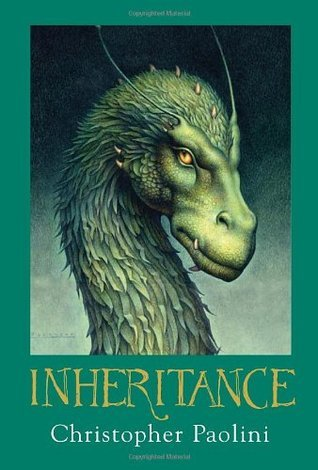

"Inheritance"
- Read on 2011-01-01
- Rating: ️️️️️
- Format: 🎧 (31 hours 17 minutes)
I enjoyed the story, and find each of the books easy to digest. They're far from heavy reading, so they're on the simple side of fantasy, in my view. I felt the ending of the book dragged a bit, but I appreciate the way this book ties off the series as a whole. If you've read the series up to this point, you certainly need to read this one.
As a note on the audio books, I love the reader on these books (though the dragon voices are a bit weird). His accent and pacing are perfect.
- Prior: American Assassin
- Next: Hell's Corner